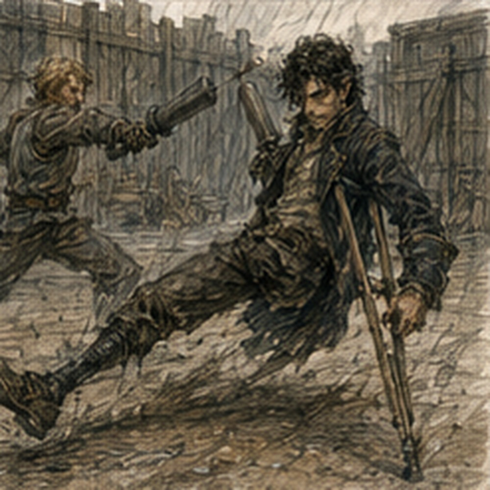
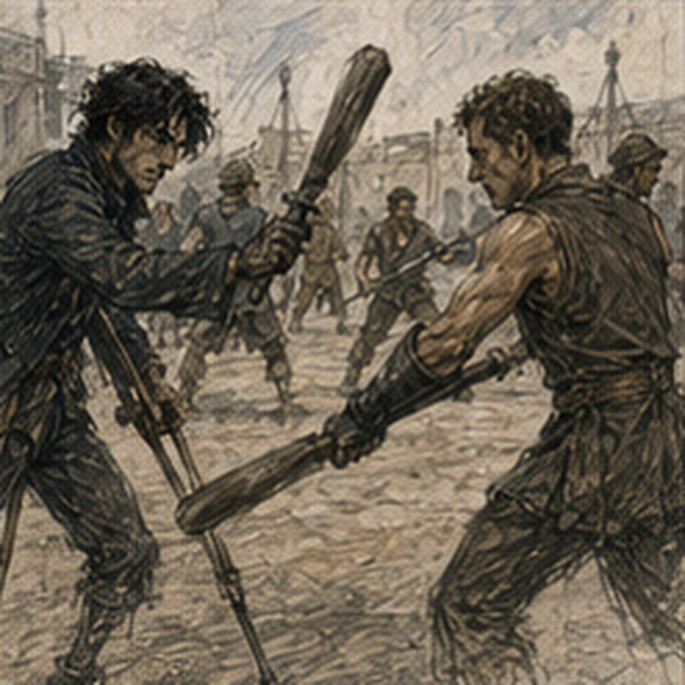

I did not go to Varo. This required more effort than it should have. I woke early. Too early. The room was gray. The wooden horse looked pleased with itself. I lay in bed and knew, with perfect clarity, that Edrin would be going to Varo Chemical sometime today. Not with me. I knew where Varo was.
I knew approximately how long it would take to walk there. I knew several routes that did not technically pass the front door but would bring me close enough to see whether Edrin had arrived. This was not following her. It was also exactly following her. I stayed in bed. Five minutes. Maybe seven.
Then I got up because remaining horizontal had become an investigative activity. My hand was almost normal. The skin under the wrap was tender, but the blister had closed. I flexed my fingers. Good. My channels felt quiet. My head felt clear. My beard still looked intentional. The horse still looked stupid. I made breakfast. Three eggs. Bread.
An onion because there was half of one left and apparently I had become a person who owned half onions. I ate. Varo existed. I washed the plate. Varo continued existing. I dressed. Sword. Coat. Notebook. Then removed the notebook. That felt theatrical. I put it back. I was allowed to own a notebook. I went outside.
The first thing I saw was a cart loaded with pale sacks. My brain said kestrin. They were flour. Good start. I walked north. Varo was south. Excellent. The Guild was busy. No runner intercepted me. No one had an urgent request. No one said my name. I found this mildly disappointing. That was probably healthy. The contract board had changed. Two escort jobs.

Warehouse count. Canal debris. A messenger run. One training support posting. I read them all. Then someone hit me in the shoulder with a padded stick. Not hard. I turned. Alden stood behind me. Dark-red scarf. Practice sword in one hand. Sweat at his temples.
“Too slow.”
“I was reading.”
“Still slow.”
“You attacked me at a contract board.”
“You survived.”
Barely. I looked at his left hand. Nothing. He noticed.
“Don't.”
“I didn't.”
“You looked.”
“I have eyes.”
“Use them somewhere else.”
Good. He turned toward the yard. I followed. Not because of the hand. Mostly. The practice yard had six people in it. Dema Rusk stood near the wall with a cup. Berren was stretching his ankle. Pessa had a padded spear. Two others I knew by face. One I didn't. Alden tossed me a padded sword. I caught it with the blistered hand.
Pain. Small. I changed hands. Alden saw.
“You good?”
“Yes.”
“You changed hands.”
“Blister.”
“From what?”
“Work.”
“Dangerous.”
“Apparently.”
Dema looked over.
“Greg,” she said.
“Dema,” I said.
“You cleared?” she asked.
“For sword work,” I said.
“Casting?” Dema asked.
“Small utility if needed. No pressure work yesterday.”
“Today?”
“Hessa hasn't updated it.”
“Then yesterday's rule.”
Good. No argument. I stepped into the yard. This was not what I had planned. I had not planned anything. That helped. Alden moved opposite me.
“Light.”
“Because of my hand?”
“Because I don't want to spend the morning explaining your corpse.”
“Thoughtful.”
He attacked. Fast. Not full speed. Still fast. I caught the first strike. Barely. Second came low. I stepped back. Third stopped short. My body moved before I decided. Good. Young. Quick. Not trained enough. But quick. I cut toward his shoulder. He turned. My blade passed. His left hand moved. There. Not the sword hand. Open. Small. He did not touch me.
He changed his balance around it. My next line missed. Then his padded sword tapped my ribs.
“Dead.”
“No.”
“Very dead.”
“I dispute.”
“You're a corpse.”
“Corpses don't dispute.”
“This one does.”
We reset. I had seen it. Not enough. Timing. Left hand moving before the body committed. Not parry. Not spell. Maybe a cue. Maybe balance. Maybe preparation for something else. Alden saw my face.
“Stop.”
“I am not doing anything.”
“You are building a house in your head.”
“Small shed.”
“Burn it.”
He attacked again. I tried. Not to solve. Just fight. That was harder. Alden hit me three times. I hit him once. Pessa laughed.
“Road expert.”
“Fuck you.”
“Wrong road.”
Again. This time I stopped watching the hand. Mostly. His feet were better than last week. Not dramatically. He recovered faster after the second tempo. Berren had been right about something. Or Alden had. Or Dema. Or someone else. I did not know. I fought. My lungs started burning. Good. My legs warmed. Sweat ran down my back. The body liked this too.
Different from bath heat. Different from food. Different from a woman looking at me. Motion. Impact. Risk with padded edges. I liked being fast. Not old-fast. Young-fast. There was a difference. Old Greg had known exactly how much movement he could afford. This body spent movement like it had never learned debt. I overstepped. Alden hooked my ankle. I went down. Hard.
The yard dirt hit my shoulder. Everyone laughed. I lay there.
“Good?”
Alden asked.
“Yes.”
“Stay down if not.”
“I am considering staying down for dignity.”
“That passed.”
I got up. We went again. No magic. No future knowledge. Just sword. I lost. Then lost. Then made him work for one. That felt better than winning something easy. After twenty minutes Dema called stop. I wanted another. My body wanted another. My hand did not. The blister had started throbbing. I stopped. Good. Alden dropped onto the bench. I sat beside him.
Pessa and Berren took the yard. Dema corrected Berren's stance once. Berren ignored him. Dema hit his boot with a stick. Berren corrected it. Efficient. Alden drank water. I waited. He looked at me.
“What?”
“Nothing.”
“That's worse.”
“You said later.”
His expression changed. Small. There. I had not asked. He had remembered.
“Yeah.”
He looked at the yard. Pessa drove Berren backward. Berren laughed. Alden's left hand moved again. This time deliberately. He noticed me notice.
“Fine.”
I stayed quiet. That surprised him.
“It's not a technique.”
“Okay.”
“Don't do that.”
“Do what?”
“Make okay sound like a question.”
“I said one word.”
“You're exhausting.”
I drank water. He sighed.
“I'm trying to stop committing the second thing.”
I looked at him. He held up the padded sword.
“First strike, fine. Second, I decide too early.”
“Yes.”
He glared. I shut up. He continued.
“If I think I know what they do after the first, I start the second before they actually move.”
I understood immediately. Too immediately. Alden's future. Tempo. Scar. Songs. No. Present. He was twenty-one. Bronze. Sitting beside me sweaty and irritated. He had noticed a flaw. Good.
“The hand?” I asked.
“Stops me.”
“How?”
He demonstrated. Sword in right. Left hand open near his center.
“Dema had us doing balance catches. Ressa's group does a thing where you don't let the second side go until the empty hand closes.”
“Which Ressa?”
He stared.
“Still Dema's group.”
“Good.”
“Why do you keep asking?”
“Names repeat.”
“That's stupid.”
“Yes.”
He opened the hand.
“First action. Then I wait. If I actually see the next line, close.”
He closed the fingers.
“Then second.”
I watched. Simple. Physical cue. Not mystical. Not future technique. A training constraint.
“Does it work?”
“Sometimes.”
“Better than before?”
“Yes.”
“Then good.”
He looked suspicious.
“What?”
“Nothing.”
“You have thoughts.”
“Many.”
“Keep them.”
I tried. Failed.
“What happens when the hand becomes automatic?”
Alden's face went flat. There. Overreach. Not because the question was bad. Because he had not asked. I knew it. Still said it. He looked back at the yard.
“Then I find out.”
I could see the next three problems. If the hand cue became automatic, it might stop functioning as inhibition. If he tied the cue too strongly to the left hand, injury or occupied hand could break it.
If he used closure as permission rather than observation, he'd simply relocate the premature commitment. All true. Probably. All useful. Maybe. Not mine. I bit the inside of my cheek. Alden looked at me.
“You're doing it,” he said.
“What?” I asked.
“Not saying something.”
“I'm growing.”
“Disgusting,” Alden said.
Pessa shouted from the yard, “He's constipated.” Berren nearly got hit laughing. I hated all of them. Alden grinned. Then said, quieter, “What?” I looked at him.
“You asked.”
“I know.”
That changed it. I told him one thing.
“Make sure the hand is reminding you to wait, not becoming the thing that tells you you're allowed to go.”
He considered. No immediate agreement. Good.
“Difference?”
“If you close because you actually saw the next line, good. If you start closing because you've waited what feels like enough time, you've built the same mistake with an extra finger movement.”
Alden looked at his hand. Then at me.
“Maybe.”
“Maybe.”
He stood. No revelation. No gratitude. He went back into the yard and asked Dema for another round. Dema said no. Alden argued. Dema said lunch. Alden argued less. Good. I left before I could improve anything else. Outside the Guild, my shirt stuck to my back. I was hungry enough to be angry. Nineteen. Again.
I bought bread with fried egg and something green I did not identify. Ate half before finding somewhere to sit. Varo was still south. Edrin might already be there. I wondered what she was asking. Treatment order. Salts. Heat before or after. Lot control. Piece testing. Customer specifications. I could predict. Probably. I could also be wrong. Better. I finished eating. A runner stopped in front of me.
Not the west-crates runner. Different boy.
“Gregory?”
“Yes.”
“Vale's storehouse.”
Of course.
“Now?”
He checked the slip.
“Today.”
“That's different.”
He shrugged.
“What does he want?”
“Rusk says two hours if you have them.”
Debt. Normal.
“West Storehouse?”
“Yes.”
“Any specific task?”
“Counting.”
I almost laughed.
“Fine.”
The boy left. I considered not going. Not because I wanted to avoid debt work. Because I wanted to know what Edrin was learning. Those were unrelated. Mostly. I went to West Storehouse. Rusk was at the side desk. He looked up.
“Clean.”
“What?”
“Your face.”
“Everyone has an opinion.”
“Better.”
“Thank you.”
He handed me a slate.
“Lamp oil.”
I looked toward the storage rows.
“How much?”
“Count sealed tins in rows three through five. Separate cracked seals. Don't move anything unless Mevi tells you.”
“Why me?”
“Because Jalen is unloading.”
“That's all?”
Rusk looked at me.
“Yes.”
Good. I took the slate. Mevi was already in row three. She had a stool, a piece of chalk, and no interest in conversation.
“Greg.”
“Mevi.”
“Count from the wall.”
“Why?”
“Because the other end changes.”
I looked. Workers were pulling tins from the front. Right.
“Good.”
She handed me chalk.
“Mark every ten.”
I started. Counting lamp oil was not intellectually difficult. That made it difficult in a different way. The tins were stacked four high. Some labels faced out. Some didn't. Sealed tins had wax across the lid seam. Cracked seals went on the slate. Not moved. Simple. I counted. Ten. Mark. Twenty. Mark. Thirty. A worker removed two from the front. Did not affect me.
Good. Forty. One cracked seal. Record. Fifty. My mind went to Varo. I lost count. Fuck. I went back to the last chalk mark. Forty. Again. Mevi noticed.
“Thinking?” she asked.
“Yes,” I said.
“Don't,” Mevi said.
“Excellent advice.”
“Costs extra,” she said.
I counted. This time I stayed with the tins. Rows three and four clean except three cracked seals. Row five had a problem. Not magical. The rear stack leaned. Slightly. I stopped. Mevi looked over.
“What?”
“Rear left.”
She looked.
“Don't touch.”
“I wasn't.”
“You were going to.”
Everyone knew. She went around the stack. Pressed one tin with two fingers. The whole column shifted. Small. Bad.
“Floor board,” she said.
I looked down. The board under the rear edge had cupped upward.
“Moisture?”
“Probably.”
“From drain?”
“Different side.”
“Roof?”
“Maybe.”
She waved Jalen over. He looked. Then called Rusk. Within five minutes they had stopped pulling from row five, marked the lane, and started shifting the front stack under Mevi's direction. I stood with my slate. No one asked me to solve the floor. Excellent. Rusk came over.
“You saw it?”
“Yes.”
“Before touching?”
“Yes.”
He nodded once. That was all. Then, “Count what they move.” I did. Different job. Same slate. Workers shifted tins. I counted. Mevi controlled placement. Jalen checked the floor. Rusk made a note for carpenter inspection. Competent people everywhere. Annoying. At one point a tin slipped from a worker's grip. My hand moved. Magic almost moved with it. Coin Barrier. Easy. Allowed if necessary.
But Mevi caught the tin against her hip before it fell. No cast. Good. She looked at me.
“You twitch?”
“No.”
“You did.”
“Reflex.”
“Keep it.”
I did. Two hours became two and a half because row five had to be reconciled. Rusk credited the time. No drama. At the desk he looked at my slate.

“Three cracked seals?”
“Yes.”
“Row five count?”
“Sixty-eight moved. Seventeen left after they cleared the unstable section.”
“Total?”
“Eighty-five.”
He checked against Mevi's count. Same. Good. Rusk set the slate aside.
“Antonius wants you upstairs.”
There. I had known he would eventually appear.
“Why?”
“Ask him.”
Everyone loved that answer. Antonius was in a small office above the warehouse floor. Not his nicer rooms. Working office. Ledger. Two letters. Cup of something dark. He looked at my beard.
“No.”
I stopped.
“What?”
“I preferred the bad one.”
I stared. He smiled.
“You're lying.”
“Yes.”
“Good.”
He pointed to the chair. I sat.
“Rusk says you found a floor problem.”
“I noticed a leaning stack.”
“Same thing.”
“No.”
His smile widened.
“Better.”
I hated that.
“What do you want?”
“Conversation.”
“Paid?”
“No.”
“Debt?”
“No.”
“Then dangerous.”
“Usually.”
He folded one letter.
“I heard you have become available for lane support.”
There it was.
“How?”
“Carrow contains people.”
“Unhelpful.”
“I pay several of them.”
“More helpful.”
He leaned back.
“Congratulations.”
“For?”
“Becoming a traffic sign.”
I looked at him. He looked pleased.
“I held a yellow marker.”
“I know.”
“That's not prestigious.”
“I know.”
“Then why congratulations?”
“Because someone asked for you twice.”
“Once.”
“Twice.”
I stopped.
“What?”
He tapped the desk.
“West gate asked whether you were available this morning.”
I thought about Gate Nine.
“No.”
“Not that.”
“What did they want?”
“Nothing interesting.”
“Antonius.”
“A wagon team was short a person to watch loading clearance while they turned long timber through the gate.”
That sounded familiar.
“Did they get someone?”
“Yes.”
“Who?”
“Does it matter?”
No. That answer arrived quickly.
“No.”
“Good.”
He watched me. I knew this game.
“What?”
“You didn't ask why they wanted you.”
“I assumed report.”
“Partly.”
“What else?”
“The clerk from the drain repair said you don't panic when everyone has a different problem.”
I considered.
“That sounds too flattering.”
“She also said you are irritating.”
“Better.”
Antonius took a drink.
“This is useful.”
“To you?”
“Potentially.”
There. I felt myself sharpen. He saw it. Of course.
“Don't.”
“What?”
“Turn potentially into assignment.”
I leaned back.
“This is becoming a conspiracy.”
“Competent people are independently discovering the same defect.”
“Which defect?”
“You hear opportunity as ownership.”
That was too close to Edrin. I disliked it. Antonius did not know why. Good.
“What do you actually want?”
“Nothing today.”
“Then why tell me?”
“Because I want to see what you do with being wanted.”
I stared.
“That sounds like therapy.”
“God forbid.”
“Good.”
“I mean commercially.”
Better. He tapped the ledger.
“People who become useful in one narrow way often make one of two mistakes. They refuse everything outside the original thing, or they accept everything because being asked feels like proof.”
I thought about Edrin. Varo. Alden asking for one thought. Rusk asking me to count. Sevren asking me to carry a ladder. The bath. The horse. I said nothing. Antonius smiled slightly.
“You have already found a third mistake, haven't you?”
“What?”
“Thinking about it too much.”
“Fuck you.”
“There he is.”
I stood.
“Are we done?”
“Yes.”
“That was a terrible conversation.”
“I enjoyed it.”
“Of course.”
At the door he said, “Greg.” I turned.
“Debt hours were good today.”
“Rusk said.”
“I am saying.”
Different. I nodded.
“Good.”
I left. The sun was lower. Varo was probably done for the day. Edrin might know something. I could go to her. No. She had said if she could tell me, she would. That did not mean immediately. I walked home.
At the corner near my lodging, someone was sitting on the step. Jorren. He had a paper parcel.
“You look sweaty.”
“I trained.”
“You look tired.”
“I worked.”
“You look angry.”
“Antonius.”
“Ah.”
He held out the parcel.
“What?”
“Food.”
“Why?”
“Tam made too much.”
I took it. Still warm.
“What's in it?”
“Food.”
“Excellent.”
He stood.
“You drinking?”
“No.”
“Good.”
“Why?”
“You're bad at it.”
“I am not.”
“You got drunk on three cups.”
“I was not drunk.”
“You bought a horse.”
“That was sober.”
He stared.
“That makes it worse.”
I opened the door.
“Want some?”
“No. Ate.”
“Then why are you here?”
He shrugged.
“Passing.”
Probably true. Maybe not. Didn't matter.
“Tomorrow?”
I asked.
“Work.”
“Dock?”
“Roof.”
“Tam?”
“No. Ilya.”
Right. Red sleeves. Roof work sometimes. People had lives.
“Pigeons?”
“Probably.”
“Good luck.”
“Fuck pigeons.”
He left. I went inside. The wooden horse remained where I had left it. I put the food beside it. Then sat. The day had contained Alden's timing problem, lamp oil, a bad floor board, Antonius being Antonius, and at least two jobs that had been solved without me. Edrin had gone to Varo. I still did not know what she learned.
I wanted to. I could wait. Probably. I opened Tam's parcel. Flatbread. Cheese. Something with peppers. Good. I ate. Then I took out my notebook.
For a moment I considered writing:
VARO.
Nothing else. Just the word.
Instead I wrote:
ALDEN:
second action waits on actual information
hand cue may help
do not turn cue into permission Then crossed out the last two lines. His problem. Not mine. I turned the page. WEST STOREHOUSE:
row five floor board cupped
Rusk handling Another page.
GUILD:
lane support availability exists
people may ask
may also ask someone else I stopped. Sinkstone. I could write the new profiles again. Already had them. No need. I closed the notebook. The horse watched.
“Shut up.”
It did. Excellent.